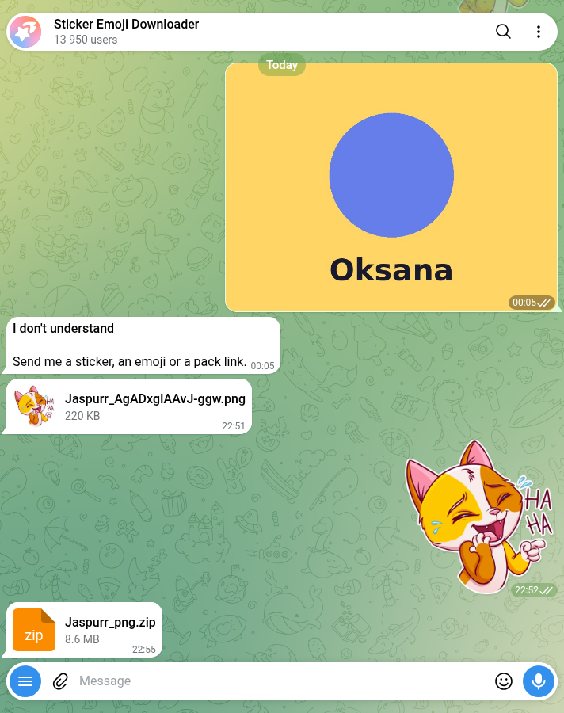

Telegram Sticker Bots: 59 Tested With 1 Sticker and 1 Photo
Telegram’s search returned 59 bots for sticker searches on 17 October. One of them has the verified badge: @Stickers, which belongs to Telegram and shows 651,179 monthly users. The other 58 are run by somebody else. Some of them are good. Five of them aren’t sticker bots at all.
People want one of two things from a sticker bot: get a sticker out as a normal picture, or turn their own photo into a sticker. I tested exactly those two, on every bot, the same way.
How I tested
- Corpus. 14 searches in Telegram’s own search box: sticker bot, stickers, sticker maker, sticker download, sticker pack, line stickers, whatsapp stickers, gif sticker, video sticker, animated sticker, sticker to png, create sticker, and the Ukrainian and Russian words for “stickers”. That gave 59 different bots. I also looked for web lists that name sticker bots by @handle. The guides I found say things like “search for Sticker Downloader” without a handle, so every bot here came from Telegram’s search.
/start, then 10 seconds. 37 bots answered. 22 said nothing.- Test 1, a sticker in. I sent each of the 37 the same static sticker and waited 25 seconds. I couldn’t take it from Telegram’s featured list, because on 17 October that list had 231 sets and not one static sticker in them, only animated and video ones. So I used the first static sticker from Telegram’s own sticker-set search for “cat”: a 512×512 WEBP from a 41-sticker set called Jaspurr.
- Test 2, a photo in. The same 37 got one picture I made for the test: 800×600 pixels, a blue circle on yellow with the word “Oksana” under it. No faces, nobody’s photo.
- Menus. Where a bot answered with buttons, I pressed the one option that matched the test, once, on 18 October.
The yardstick is Telegram’s own rule from its sticker documentation: “For stickers, one side must be exactly 512 pixels in size – the other side can be 512 pixels or less.” The file has to be PNG or WEBP. Video stickers are WEBM with the VP9 codec, no longer than 3 seconds, no bigger than 256 KB and with no sound.
Nothing was paid for, and no channel was joined. Every pack a bot made for me during the test has since been deleted.
The results
| What happened | Bots | Who |
|---|---|---|
Silent on /start | 22 | Including 5 named “sticker to PNG” or “sticker to image”, and 2 of 3 LINE names |
| Sent a usable picture back from a sticker | 4 | @Stickerdownloadbot, @DownloadStickersBot, @GimmeStickerBot, @StickerEmojiRobot |
| Made a sticker from the photo that meets the 512 rule | 3 | @vidsticker_bot, @Stickerdownloadbot, @fStikBot |
| Made a sticker that breaks the 512 rule | 1 | @DownloadStickersBot (800×600) |
| Turned out to be a broadcast list | 5 | Manybot channels in Persian, Russian and Spanish |
| Wall or out of service | 3 | Join-a-channel wall, “bot is not working now”, a public moderation queue |
| Silent to both the sticker and the photo | 8 | They answered /start, then nothing |
@Stickerdownloadbot and @DownloadStickersBot are in two rows each.
Getting a sticker out as a PNG
The bots that work here, work well.
@Stickerdownloadbot (36,271 monthly users) answered with “✅ Converted to: PNG, JPEG, WEBP” and sent a 512×512 PNG of 241,066 bytes, the same image as a photo, and a small zip with all three formats. No menu, no questions.
@DownloadStickersBot sent back the same three things. The PNG was 241,066 bytes too, byte for byte the same size. Two names, one converter. That matters later, because the two did not behave the same with a photo.
@GimmeStickerBot (13,950 monthly users) asks first: WEBP, PNG, JPG, “Download entire pack” or “Convert to emoji pack”. PNG gave me a 512×512 file of 225,027 bytes, a different encoder from the pair above. One thing to know: after you pick, the bot deletes its own menu. To get the whole pack I had to send the sticker a second time.

The whole pack in one go
Two bots download an entire set from a single sticker. I checked both zips by reading their file lists:
- @GimmeStickerBot: “Download entire pack”, then PNG.
Jaspurr_png.zip, 8,997,971 bytes, 41 PNG files, every one 512×512. - @StickerEmojiRobot: “the whole pack”. The message changed to “🔢 Stickers in the pack: 41”, then PNG. 9,750,973 bytes, 41 PNG files, every one 512×512. It also puts its own name into the zip’s file name.
Both were complete. Someone else’s pack is still someone else’s art: fine for your own chats, not for resale.
Telegram to WhatsApp
“Telegram sticker bot WhatsApp” is one of the searches Google suggests. @tgtowabot (26,707 monthly users) took my one sticker and went for the whole set: “This sticker pack is too large: there are 41 stickers. WhatsApp supports only sticker packs up to 30 stickers.” It split the set into two .wastickers files of 1,336,863 and 537,291 bytes and then told me to install a separate transfer app from the App Store or Google Play. The last step happens outside Telegram, in an app I didn’t test. A second WhatsApp bot, @TGtoWAStickerBot, wanted me to join its channel before it would do anything.
Bots that sent the sticker straight back
@DeepStickBot and @videostickers_bot both returned a WEBP of 48,116 bytes. That’s the size of the sticker I sent. They gave me my own file back. @EmojiSaverBot sent a zip with the note “Some items could not be converted. Original files were saved as-is.”
Making a sticker from a photo
This is where the 512 rule comes in. My photo was 800×600. A correct sticker from it is 512×384: the long side scaled to exactly 512, the short side in proportion.
@vidsticker_bot got it right in a tenth of a second: “Done ✅ From a photo · 6 KB of 512 · 512×384 · made in 0.1 s”. Under the sticker came a row of buttons for background removal, outline, shape, motion and style, plus a link to a web editor. It also did something I didn’t ask for, which I come back to below: it created a pack and put the sticker in it.
@Stickerdownloadbot sent a 512×384 PNG and a 512×384 WEBP, with the instruction to forward the image to @Stickers. That’s the official route, and it’s honest about it: this bot prepares the file, Telegram’s bot makes the pack.
@fStikBot (492,882 monthly users, the biggest bot here after Telegram’s own) wants a pack first. You choose stickers, emoji (the bot reminds you only Premium users can send custom emoji) or adaptive emoji, then a title. It says “Everyone will see it” and offers three made-up titles. I typed “Oksana test shape”. The pack came out as “Oksana test shape :: @fStikBot”: the bot adds its handle to every title. It had promised “I’ll add this file to it right away”, but the new pack held the bot’s own placeholder instead, a two-second video sticker that says “/delete”. When I sent the photo again, it replaced the placeholder with a 512×384 WEBP of 4,828 bytes. Correct, after one extra step. fStikBot is open source on GitHub, and the repository had a commit two days before my test.
@DownloadStickersBot, the twin of @Stickerdownloadbot from the first test, sent my photo back as a sticker at 800×600. Neither side is 512, so it doesn’t meet Telegram’s rule. Same converter for stickers, different code for photos.
The rest were menus, not answers: @tinyfile_bot asked me to name a pack first, @sticbot sent me to its mini app, @StickersPackRobot listed my sets, and @StickerAIMakerBot opened a “Sticker Shop” with face packs at 9 Telegram Stars each, which I didn’t buy.
What a sticker pack says about you
A Telegram sticker pack opens for anyone who has its link, and, as @vidsticker_bot’s own help text puts it, “whoever gets your sticker can see its whole pack.” The pack @vidsticker_bot made for me had a link built from my numeric Telegram user ID, and its title used the first name on my account. Send a sticker from it to a group, and the group can see both.
The same help text advises you to “keep personal stickers in a separate one”, and adds: “We keep the videos you send and the finished stickers for up to 7 days to improve the service, then delete them.” @fStikBot builds the link from the title you type, so nothing personal goes into it unless you type it.
The good news is that you can delete these packs yourself. Telegram’s API documentation says “Users and bots can directly modify stickersets” created this way. @vidsticker_bot has no delete command, so I removed the sticker and then the empty pack from my own account through Telegram’s API, and the pack was gone. In @fStikBot it’s three taps: “Hide pack”, then “Delete pack”, then “Yes, delete”. I didn’t test the in-app route, so I can’t tell you which menu it is on your phone.
Five “sticker bots” that are broadcast lists
Five bots in the results, named things like Sticker maker and Create Sticker, were built with Manybot. Your first message subscribes you to their broadcasts, and the reply tells you so: “Use /off to pause your subscription”. Three are in Persian, one in Russian, one in Spanish. Two of them looked silent when I sent the sticker and only showed the subscription message after the photo. I sent /off to all five, and all five confirmed. None of them makes stickers.
Three more didn’t get to the sticker: one wants you to join its channel, one replies in Arabic that “the bot is not working now, try later”, and @sticker_maker_appbot answered the sticker with “After moderation, we will add the sticker pack to @sticker_maker_app”, its public channel. Don’t send that one anything private.
There’s also a lookalike. Searching for “GimmeStickerBot” in Telegram also shows @GimmeStickerBotbot, with an Uzbek name, no description and no commands. I didn’t message it.
LINE stickers
“Telegram sticker bot LINE” is another search Google suggests. Three bots with LINE in the name came up. Two didn’t answer /start; @line_stickers_bot answered it, then said nothing to a sticker or a photo. I didn’t send a LINE store link, so I can’t call it dead, only silent on what I sent.
Do you need a bot at all?
For making stickers, often not. Telegram added a sticker editor to the app in April 2024. Its announcement says: “open the sticker panel from your input field in any chat, then tap the inviting (+) button”, and that “it takes just one tap to cut out objects and remove the background.” I didn’t test the editor for this post, so that’s Telegram’s description, not my measurement.
The official @Stickers bot still works too. On 18 October it answered with its full command list: /newpack for a static PNG or WEBP set, /newvideo for WEBM, /newemojipack for emoji. Telegram’s developer pages now call the old bot-based editing deprecated in favour of the in-app editor and the Stickers mini app, but the bot hasn’t gone anywhere. It’s also the only place to see your pack’s usage numbers. The developer of fStikBot asked Telegram in 2022 to open those statistics to other bots, because “you can get sticker pack statistics only through the official @Stickers bot.”
For getting stickers out as ordinary image files, the bots above do the conversion. If you’d rather run something on your own computer, sticker-convert is an open-source app that downloads and converts packs for Telegram, WhatsApp and Signal.
What I didn’t test
- Animated and video stickers in. I sent one static sticker. Bots like @StickerSaverBot only convert animated ones, and said so.
- Videos and GIFs in. Several bots, @vidsticker_bot included, are mainly video sticker makers. I only sent a photo.
- Paid features. @GimmeStickerBot has a
/procommand and @StickerAIMakerBot sells packs. I bought nothing.
A bot that was silent on 17 October might answer next week, and one that worked might start asking you to join a channel.
How to pick a sticker bot in two minutes
- Decide which way you’re going. Bots that download stickers mostly can’t make them, and the other way round. Only @Stickerdownloadbot did both properly.
- Check the size of the first sticker you make. One side should be exactly 512 pixels. @DownloadStickersBot’s 800×600 isn’t.
- Look at the pack link and title before you share. If it has your user ID or name in it, start a separate pack or use a bot that names packs from what you type.
- If a bot answers with “/off to pause your subscription”, it’s a broadcast list. Send
/offand move on. - Don’t send anything private to a bot that mentions moderation or a public channel.
- Check the handle. @GimmeStickerBot and @GimmeStickerBotbot are different bots.
Stickers sorted. Need something to play in the group?
The Telegram Party Pack is plain text you paste into the chat: 110 Truth or Dare, 45 Never Have I Ever, 30 Would You Rather, 30 Most Likely To, 25 Paranoia and 15 Story Chain prompts, with ready-made poll blocks and a host guide. No bot to add, nothing reading your group.
Get the pack — $9.99Frequently asked questions
What is the best Telegram sticker bot?
@Stickerdownloadbot saved a sticker as a PNG with no questions and also made a correct sticker from a photo. For whole packs, @GimmeStickerBot and @StickerEmojiRobot returned all 41 stickers as 512×512 PNGs. For making stickers, @vidsticker_bot and @fStikBot got the size right. Only Telegram’s own @Stickers is verified.
How do I download a Telegram sticker as a PNG?
Send the sticker to a download bot such as @Stickerdownloadbot or @GimmeStickerBot and it sends back a PNG file. In this test both returned a 512×512 PNG within seconds. For a whole pack, use the “Download entire pack” option in @GimmeStickerBot.
What size should a Telegram sticker be?
One side must be exactly 512 pixels and the other 512 pixels or less, in PNG or WEBP format. Video stickers are WEBM with the VP9 codec, up to 3 seconds and 256 KB, with no sound.
Can people see who made a sticker pack?
Anyone who gets a sticker can open its pack. Some bots build the pack link from your numeric Telegram ID or put your first name in the title, so check both before you share stickers widely.